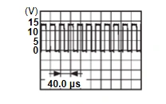

車身外觀、車門、車頂與車輛防盜 - 車門與鎖 - 故障碼/電路診斷 - B2437-11 Spindle motor RH
診斷程序
N511010170035A00ENG
1.
檢查 SPINDLE MOTOR INPUT 訊號
使用示波器檢查 spindle unit RH 線束接頭與搭鐵之間的訊號。
(+)
(–)
狀況
訊號
（參考值）
Spindle unit RH
接頭
端子
B73
3
搭鐵
Liftgate
自動開啟作動

CF100B8JAA00ENG
自動關閉作動
0 – 1 V
5
自動關閉作動
CF100B8JAA00ENG
自動開啟作動
0 – 1 V
檢查結果是否正常？
是
更換電動尾門控制單元。請參閱
拆卸與安裝
.
否
前往步驟 2
.
2.
檢查 SPINDLE MOTOR 電路
斷開/拔除 power liftgate control unit 接頭與 spindle unit RH 接頭。
檢查 power liftgate control unit 線束接頭與 spindle unit RH 線束接頭之間的導通性。
Power liftgate control unit
Spindle unit RH
導通
接頭
端子
接頭
端子
B56
43
B73
3
存在
50
5
檢查 power liftgate control unit 線束接頭與搭鐵之間的導通性。
Power liftgate control unit
—
導通
接頭
端子
B56
43
搭鐵
不存在
50
檢查結果是否正常？
是
更換 spindle unit RH。請參閱
拆卸與安裝
.
否
修理或更換線束。
已加入書籤
書籤數量過多。
請刪除後重新加入書籤。
×